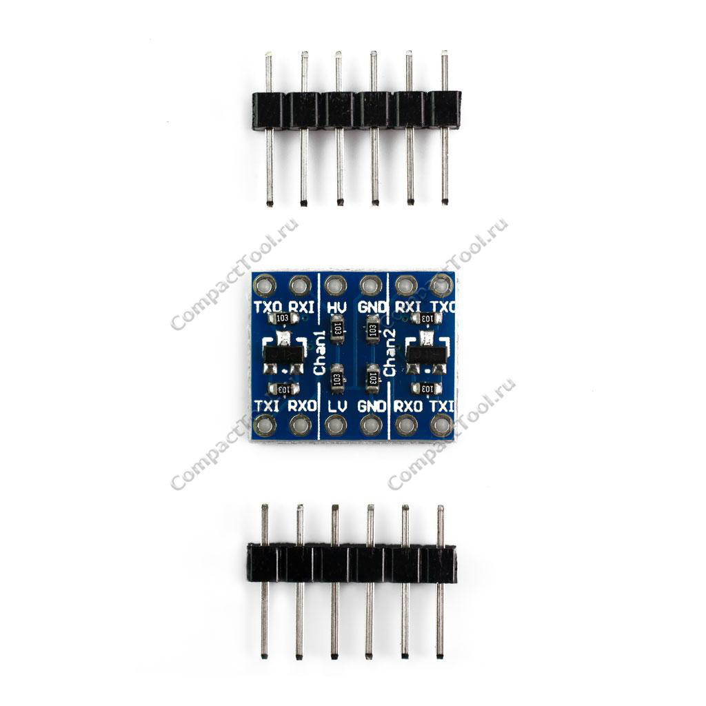
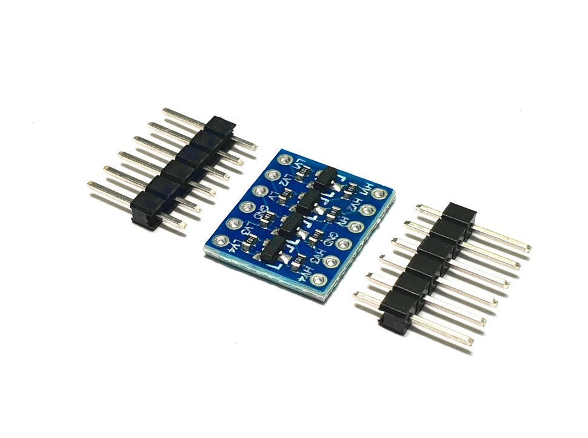

EW_PERSPEKTIVE
1.Преобразователь логических уровней 5В в 3В
Применение
В современных высококачественных низкопотребляющих приложениях наблюдается тенденция снижения напряжения питания. В то время как одни приборы способны работать при низком напряжении питания, другие же должны работать при более высоких напряжениях питания. Для совместимости таких приборов в одном устройстве или системе уровни выходных сигналов должны находиться в допустимых пределах уровней входных сигналов других приборов.
Преобразователь логических уровней сигналов необходим для подсоединения 3.3 В устройств к устройствам, рассчитанным на 5В логику. Модуль согласования логических уровней собран на небольшой односторонней плате, на которой расположены 8 подтягивающих резисторов с 2 полевыми транзисторами. Он хорошо подходит для согласования шин I2C, SPI, UART… т.к. многие датчики сейчас выпускаются на напряжение 3,3В.
2.Преобразователь логических уровней 4-х канальный, двунаправленный TTL 5<->3,3В

Двунаправленный, 4-х канальный преобразователь логических уровней сигнала 5В <-> 3.3В - конвертирует TTL сигнал для согласования между собой устройств с разным входными и выходными уровнями. На практике радиолюбители часто сталкиваются с проблемой, когда на выходе микроконтроллера TTL сигнал 5В, а датчик, модуль или I2C устройство работает только с уровнями 3,3В. Самое простое решение это резистивный делитель, но у него есть недостатки: 1 - Заваливается фронт сигнала, 2 - Работает только в одну сторону. Если Вам понадобится соединить два устройства по шине I2C с разными уровнями, то резистивный делитель в этом случаи Вам не поможет. Для таких случаев и был сделан активный конвертер уровней сигнала, представленный в нашем магазине. Благодаря ему Вы сможете соединить между собой устройства с разными TTL уровнями. Этот преобразователь логических сигналов, также может согласовать уровни 2,8В - 1,8В. Из-за своей низкой цены, arduino преобразователь уровней очень популярен в радиолюбительских сообществах и DIY кругах.
Подключение:
HV1 - канал 1 для уровня 5В <=> LV1 - канал 1 для уровня 3,3В
HV2 - канал 2 для уровня 5В <=> LV2 - канал 2 для уровня 3,3В
HV3 - канал 3 для уровня 5В <=> LV3 - канал 3 для уровня 3,3В
HV4 - канал 4 для уровня 5В <=> LV4 - канал 4 для уровня 3,3В
HV - питание 5В
LV - питание 3,3В
Размеры платы: 16 x 13 мм